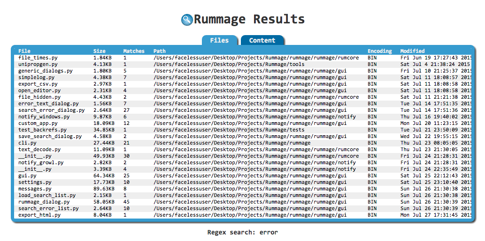

User Guide
Overview
Rummage is designed to be easy to pick up. Rummage's interface consists of three tabs: Search, Files, and Content. In general, a user specifies where they want to search, what they want to search for, and optionally what they want to replace it with. Search features can be tweaked with toggles, and the files that get searched can be narrowed with filters. Search and replace options are all contained in the Search tab. When a search has been completed, general info about the matches found in files will be displayed in the Files tab, and more detailed context information will be displayed in the Content tab.
Rummage also comes with a simple regular expression tester to test out patterns. It also provides a feature where patterns can be saved for later and/or frequent use.
The status bar will show search progress, match counts, and other useful information.
Warning: Replace
When replacing, Rummage will back up the file. If the copy fails, it should terminate the replace for that file. You can disable backups if you like, but if you aren't careful with your patterns, you may remove unwanted text that you won't be able to recover unless you are using version control.
This is free software, and I am not responsible for files corrupted or lost.
See Backups to learn more about backups and how to customize backups.
Running
After installation, you should then be able to access Rummage from the command line. This assumes the Python bin directory is in the path.
rummage
Or specify a path:
rummage --path mydirectory
You can also run rummage by calling your specific python version like this:
python3 -m rummage --path mydirectory
Search Tab
The Search tab is broken up into 2 panels, the first of which is the Search & Replace panel. The Search & Replace panel has all the inputs where the search and replace is defined and configured. It also has access to the regular expression tester and the save/load dialogs for saving/loading patterns for later use.
The second panel, is the Limit Search panel. The Limit Search panel contains toggles and inputs that filter the files to be searched.
Files Tab
The Files tab is where files with matches are shown after a search completes. The files are arranged in a sortable table. Each entry will show the file's name, size, number of matches in the file, the file path, detected file encoding, date/time when the file was created, and date/time of when the file was last modified.
When mousing over an entry, the full path to the file will be shown in the status bar. If you have the editor option in the preference dialog configured properly, you can double click an entry to open to the first match of that file in your favorite editor. Right clicking the entry will bring up a context menu allowing you to reveal the file in your operating system's file manager (Linux will just open parent folder due to limitations on a cross distro solution).
Content Tab
The Content tab shows each match in a file individually. The entries will be arranged in a sortable table. Each entry shows the file's name, the line on which the match was found, the number of matches on that line, and the content of the line. Long lines will be truncated.
When mousing over an entry, the full path to the file will be shown in the status bar. If you have the editor option in the preference dialog configured properly, you can double click an entry to open to that specific match of that file in your favorite editor.
Search & Replace Panel

The Search & Replace panel contains three text boxes with a dropdown history. The first text box defines where to search, the second defines what to search for, and the last defines what to replace matches with (this is only needed when doing replaces). You can select previously used patterns and search targets by expanding the dropdown panel for the input.
Below the text boxes are toggles that control the regular expression engine's flags and/or features. These will vary depending on which regular expression engine you are using as Rummage can be used with Python's default Re engine or the third party Regex engine. Both optionally can use the a special wrapper called Backrefs to add support for a couple special escapes.
Underneath the regular expression flags, are toggles for general Rummage search features. These will alter search and/or replace behavior.
Lastly, Rummage provides buttons to launch a regular expression tester dialog or dialogs to save or load frequently used regular expressions.
Common Regular Expression Flags
Both the Re and Regex engine have a couple of shared flags that are exposed in Rummage. These toggles are found directly under the search and replace text boxes.
| Toggle | Description |
|---|---|
| Search with regex | Alters the behavior of Search for and Replace with. When this is checked, both text boxes require regular expression patterns opposed to literal string. |
| Search case-sensitive | Forces the search to be case-sensitive. |
| Dot matches newline | . will also match newlines. |
| Use Unicode properties | Changes the behavior of \w, \W, \b, \B, \d, \D, \s, and \S to use use characters from the Unicode property database (will also modify \l, \L, \c, and \C in search patterns if using Backrefs with Re). |
Regex Engine Flags
If the Regex engine is being used for regular expressions, a couple of extra toggles will be available. Regex can be run in either VERSION0 or VERSION1 mode. VERSION0 is compatible with Re regular expression patterns and has the extra fullcase toggle. VERSION1 does not have this toggle as it is enabled by default and can only be disabled inline via a pattern with (?-f). VERSION1 is not directly compatible with Re patterns as it adds a number of changes to the syntax allowing for more advanced search options.
| Toggle | Description |
|---|---|
| Best fuzzy match | If performing a fuzzy match, the best fuzzy match will be used. |
| Improve fuzzy fit | Makes fuzzy matching attempt to improve the fit of the next match that it finds. |
| Unicode word breaks | Will use proper Unicode word breaks and line separators when Unicode is enabled. See Regex documentation for more info. |
| Use POSIX matching | Use the POSIX standard for regular expression, which is to return the leftmost longest match. |
| Search backwards | Search backwards. The result of a reverse search is not necessarily the reverse of a forward search. |
| Format style replacements | Replace pattern will use Python's string replace format for replace. "{1[-1]} {1[-2]} {1[-3]}" etc. |
| Full case-folding | Use full case folding. For Regex V0 only as it is enabled by default for V1. |
Rummage Flags
Rummage has a couple of flags that are not specific to the regular expression engine.
| Toggle | Description |
|---|---|
| Boolean match | Will check each file up until the first match and will halt searching further. No line context info will be gathered or displayed. Does not apply when performing replaces. |
| Count only | Will just count the number of matches in the file and will not display line context information. This has no effect when applying replaces. |
| Create backups | On replace, files with matches will be backed up before applying the replacements; backup files will have the .rum-bak extension. |
| Force <encoding> | Forces all files to be opened with the specified encoding opposed to trying to detect the encoding. Encoding is hard and slow, so this is the preferred method for fast searches. On failure, binary will be used instead. |
| Use chain search | Puts Rummage into "search chain" mode. When in "search chain" mode, rummage will only use saved search chains for search and replace. |
| Use replace plugin | When enabled, Rummage will use a replace plugin instead of a replace pattern in order to do more advanced replaces. |
Regular Expression Tester

Rummage comes with a simple regular expression tester (but you can also test literal patterns if desired). It has a simple multi-line text box to place content to search, and another multi-line box that will show the final results after the find and replace are applied. Below that you will find two text input boxes for the find pattern and the replace pattern. Lastly, all search and replace flag toggles are found under the patterns.
To use the tester, simply enter the content to search, set your desired toggles, and input your find and replace pattern. As you change your pattern or change your toggles, matches will be updated and highlighted, and the result box will be updated.
When you are satisfied with your result, click the Use button, and your pattern and settings will be populated in the main window.
Saving and Loading Regular Expressions
Regular expressions can be very complex, and sometimes you might want to save them for future use to save yourself from having to reconstruct them.
When you have a pattern configured that you want to save, simply click the Save Search button, and a dialog will pop up asking you to name the search. When done, click the Save button on the dialog and your search patterns and toggles will be saved.
You'll notice that there are two input boxes. The first requires a unique name (only word characters, underscores, and hyphens are allowed). The second is an optional comment in case you wish to elaborate on what the pattern is for.
Underneath the inputs will be the actual search settings being saved. All of the search settings will be in read only controls.

To load a pattern that was saved previously, click the Load Search button. You will be presented with a dialog showing all your saved searches. Highlight the pattern you want to load and click the Load button. Your pattern and toggles will be populated in the main dialog.
If you wish to edit the name or comment of a search, you can double click the entry or click the "Edit" button.

Search Chains
There are times you may have a task that requires you to do multiple find and replaces that are all related, but are too difficult to represent as a single find and replace. This is where search chains can be helpful.
Search chains are essentially a sequence of multiple saved search and replace patterns. You can create a search chain by clicking the Search Chains button which will bring up the search change manager.

Here you can create or delete search chains.

To use search chains you must put Rummage in "search chain" mode by selecting the check box named Use search chains in the main window. When "search chain" mode is enabled, all controls that don't apply to search chains will be disabled, and the search box will be replaced with a drop down for selecting created chains. When a search is performed, Rummage will iterate over each file with all the saved searches in the chain.
Replace plugins
Regular expressions are great, but some times regular expressions aren't enough. If you are dealing with a replace task that requires logic that cannot be represented in a simple replace pattern, you can create a "replace plugin".
Simply create a Python script with a Replace class derived from the ReplacePlugin class found in rumcore at: from rummage.lib import rumcore. The plugin file must include a function called get_replace that returns the needed class.
class ReplacePlugin(object): """Rummage replace plugin.""" def __init__(self, file_info, flags): """Initialize.""" self.file_info = file_info self.flags = flags self.on_init() def on_init(self): """Override this function to add initialization setup.""" def get_flags(self): """Get flags.""" return self.flags def get_file_name(self): """Get file name.""" return self.file_info.name def is_binary(self): """Is a binary search.""" return self.file_info.encoding.encode == 'bin' def is_literal(self): """Is a literal search.""" return self.flags & LITERAL def replace(self, m): """Make replacement.""" return m.group(0)
The file_info property is a named tuple providing information about the current file such as name, size, creation date, etc.
class FileInfoRecord(namedtuple('FileInfoRecord', ['id', 'name', 'size', 'modified', 'created', 'encoding'])): """A record for tracking file info."""
The flags property seen above contains only Rummage search related flags (the flags are abstracted at this level and are converted to the appropriate regular expression flags later).
# Common regular expression flags (re|regex) IGNORECASE = 0x1 # (?i) DOTALL = 0x2 # (?s) MULTILINE = 0x4 # (?m) UNICODE = 0x8 # (?u) # Regex module flags ASCII = 0x10 # (?a) FULLCASE = 0x20 # (?f) WORD = 0x40 # (?w) BESTMATCH = 0x80 # (?b) ENHANCEMATCH = 0x100 # (?e) REVERSE = 0x200 # (?r) VERSION0 = 0x400 # (?V0) VERSION1 = 0x800 # (?V1) FORMATREPLACE = 0x1000 # Use {1} for groups in replace POSIX = 0x2000 # (?p) # Rumcore search related flags LITERAL = 0x10000 # Literal search
To use replace plugins, simply check the Use plugin replace check box in the main dialog.
The main dialog's Replace with text box will become the Replace plugin text box with an associated file picker. Here you can point to your replace plugin file.
Example Plugin
In the example below, we have a replace plugin that replaces the search result with the name of the file. It is assumed this is not a binary replace.
from __future__ import unicode_literals from rummage.lib import rumcore import os class TestReplace(rumcore.ReplacePlugin): """Replace object.""" def replace(self, m): """Replace method.""" name = os.path.basename(self.get_file_name()) return name def get_replace(): """Get the replace object.""" return TestReplace
Limit Search Panel
The limit search pattern contains inputs and toggles to filter which files will be searched. Some people may like to set up the filters and hide the panel. If this is desired, you can select in the window's menu View→Hide Limit Search Panel, and the panel will be hidden.
| Limiter | Description |
|---|---|
| Size of | Limits files that are searched by size in Kilobytes. Files are limited by whether they are greater than, less than, or equal to the specified size. Setting the dropdown to any disables the filter and allows any file size to be searched. It is recommended to cap search sizes in projects with very large files for the best performances. The more complex the search pattern, the longer it will take to search a really large file. |
| Modified | Limits the files to be searched by the modified timestamp. It contains a date picker and time picker that are used to specify the target date and time. Files are limited by whether their timestamp comes before, after, or on specified date time. Setting the dropdown to on any will disable the filter and allow a file with any timestamp to be searched. |
| Created | Limits the files to be searched by the creation timestamp. It contains a date picker and time picker that are used to specify the target date and time. Files are limited by whether their timestamp comes before, after, or on specified date time. Setting the dropdown to on any will disable the filter and allow a file with any timestamp to be searched. |
| Files which match | Specifies a file pattern for files that should be searched. Multiple file patterns can be specified with ; used as a separator. If the Regex toggle to the text box's right is selected, the file pattern must be a regular expression pattern. You can select previously used patterns by expanding the dropdown panel for the input. |
| Exclude folders | Specifies a directory exclude pattern to filter out folders that are not to be crawled. Multiple file patterns can be specified with ; used as a separator. If the Regex toggle to the text box's right is selected, the file pattern must be a regular expression pattern. You can select previously used patterns by expanding the dropdown panel for the input. |
| Include subfolders | Indicates that folders should be recursively searched. |
| Include hidden | The given OS's native hidden files, folders and dotfiles will be included in the search. |
| Include binary files | Forces Rummage to search binary files. |
Tip
If you don't specify a search pattern, Rummage will use your file filter and just show files that match your file filter pattern.
Export to CSV or HTML

Rummage allows the exporting of the results to either CSV or HTML. Simply select File→Export and pick either CSV or HTML. The HTML output will be styled similar to the GUI interface with the results in tables with sortable columns.
!!! note "Note": Really, really large sets of results will probably be best suited for CSV as a browser may have a hard time loading the entire data set at once.
Preferences
The preference dialog (found at File→Preferences) is where general application settings are available. The preference dialog organizes settings by tabs.
General
The General tab contains a couple of useful settings.
- Single Instance
- By default, Rummage will allow for multiple windows to be open. If this option is enabled, the first window will be be the only window to open. All subsequent instances will pass their arguments to the first and close without showing a window.
- Language
- Rummage has internal support to display dialog labels in different languages. Currently Rummage has English. Russian is outdated but includes most of the needed translations. In order to use locale, you must copy the project's localization files to your user settings directory. See Localization to learn more.
Regex
The Regular Expression Modules tab is where the desired regular expression engine that Rummage uses can be selected and configured. By default, Rummage will use Re, but if Regex module is installed in your Python installation, it can be selected instead. There is also the options of using Re or Regex with Backrefs (a wrapper that adds a couple of special escapes).
If using Regex, you can set it to version of your choice. V0 tries to be completely compatible with Re patterns while V1 breaks compatibility with Re and adds even more useful features. Please see Regex documentation to learn more.
Editor
The Editor tab is where an editor can be configured that will be used to show files for editing. To setup, click the Change button. You will be presented with a dialog. Simply provide the appropriate command to open files and click Apply.
The editor options dialog has a file picker to select the the editor. In macOS it may be beneficial to create a shell script or symlink that you can references as the picker won't be able to descend into an .app bundle as it is viewed as a file instead of a folder.
You can then add arguments. Each argument must be added as a separate entry. So something like --file myfile.txt would be counted as two arguments while --file=myfile would be counted as one.
As noted in the image above, Rummage provides 3 special variables that can be used to insert the file name, line number, or column number.
| Argument Variables | Description |
|---|---|
{$file} |
Insert the file name. |
{$line} |
Insert the line number. |
{$col} |
Insert the column number. |
Notifications

The Notification tab controls enabling/disabling and configuration of notifications. You can enable/disable visual notifications and/or audible notification sounds.
You can also select whether to use the system's built-in notifications or Growl.
- Ubuntu
-
- Growl: Support for Linux.
- Native: OSD via
notify-send.
Note
Though Rummage should run on any Linux distro, the native dialog option was built around Ubuntu's native notifications called OSD. Notifications will not work on other distros that do not use OSD unless they use Growl. Even without Growl, other distros will probably still get the audible cue, but as each distro varies, it is difficult to be certain. As notifications are not crucial to usage, this is minor concern.
- macOS
-
- Growl: Support for macOS.
- Native: Notification Center via terminal-notifier. Path to
terminal-notifiermust be configured.
Note
When selecting
nativeon macOS, an option to select the path to terminal notifier will be available since native dialogs rely onterminal-notifierto send notifications to the Notification Center. This must be configured or native notifications will not work.When selecting the
terminal-notifierpath, you can select either the binary directly or the.<appbundle (depending on how you installedterminal-notifier). When selecting the.appbundle, Rummage will know how to access the binary inside the bundle. - Windows
-
- Growl: [Support for Windows][growl-win].
- Native: Native windows taskbar notifications.
History
The History panel is where all text box drop down history can be cleared.
Backrefs (Extended Regex Escapes)
Rummage has the option of using a special wrapper called Backrefs around Python's Re or the 3rd party Regex module. Backrefs was written specifically for use with Rummage and adds various additional back references that are known to some regex engines, but not to Python's Re or Regex modules. The supported back references actually vary depending on the engine being used as one may already have similar support. You can enable extended back references in the Preferences dialog under the Regular Expressions Module panel.
To learn more about the added back references when using Backrefs, read the official Backrefs documentation.
Backups
Rummage by default does a backup of files on replace when Create backups is enabled in the main dialog. Backups are saved in the same location as the target file with the unique extension rum-bak appended to them. When Create backups is enabled, files with the extension rum-bak are ignored in search and replace in order to avoid replacing content in your backup.
If desired, Rummage can be configured to store backups in a sub-folder at the target file's location by setting the Backup to folder option in the setting dialog. The backup folder will be named .rum-bak. When this is done, all files in .rum-bak will have the bak extension. The entire folder .rum-bak is excluded from search and replace when Create backups is enabled.
If you would like, you can control the backup extension in the settings dialog and/or the backup folder name. Remember though, when saving backups to a sub-folder, the custom extension will not be applied and bak will be used as the whole folder is ignored eliminating the need for a unique extension.
File Manager Context Menu
macOS
- Open Automator.
- Create new Service.
-
Set the following:
- Service receives selected
files or foldersinany Application. - Shell:
/bin/sh. - Pass input:
as arguments. -
Content of script:
(/Library/Frameworks/Python.framework/Versions/2.7/bin/rummage --path "$1")>/dev/null 2>&1 &
This is just an example. You will need to determine the location of your Python install.
- Service receives selected
-
Save to
/Users/<username>/Library/Services/Rummage Here....
Windows
-
Create a file
rummage.regand put the following in it (replace <rummage_path> path with the actual path torummage.exethat is created in your Python Script folder on installation). Remember to escape backslashes appropriately. This isn't a guide in how to do registry editing proper, so only edit the registry if you are certain of what you are doing.Windows Registry Editor Version 5.00 [HKEY_CLASSES_ROOT\Folder\shell\Rummage Here...] @="" [HKEY_CLASSES_ROOT\Folder\shell\Rummage Here...\command] @="\"<rummage_path>\" \"--path\" \"%1\"" [HKEY_CLASSES_ROOT\*\shell\Rummage Here...] @="" [HKEY_CLASSES_ROOT\*\shell\Rummage Here...\command] @="\"<rummage_path>\" \"--path\" \"%1\""
-
Save file.
- Double click the registry file to add the context menu into Windows Explorer.
Linux
There are many different flavors of Linux using different file managers. This makes it difficult to give a guide to cover all cases. Please research about your specific distro's file manager and how to add context menus. If you would like to include the info here, please issue a pull request to update the documentation.
Ubuntu Nautilus
Paths might vary depending on Ubuntu version etc.
-
Create an executable file called
Rummage Here...in~/.local/share/nautilus/scripts/with the following content (RUMMAGE_PATH should be the binary created when installing rummage in Python which is usually/usr/local/bin/rummage).#!/usr/bin/python import os import subprocess RUMMAGE_PATH = "/usr/local/bin/rummage" selected_paths = os.environ.get("NAUTILUS_SCRIPT_SELECTED_FILE_PATHS", None) if selected_paths is not None: paths = selected_paths.split("\n") if len(paths): subprocess.Popen([RUMMAGE_PATH, "--path", paths[0]])
-
Restart of Nautilus may or may not be needed, but context menu item should appear under
Scriptsand should work on files and folders.
Localization
Rummage provides an i18n localization framework to allow support for displaying the UI in other languages. But there is some manual setup required as out of the box, everything is in English. Currently the project only has an incomplete Russian translation (I don't speak Russian, so I can't complete it).
So to get localization, you must first build the .mo files on your system, copy them to your Rummage setting folder, select your desired language in the preference dialog, and restart Rummage.
Build Translations
Download the release source and unzip it.
Compile .mo files by running the tools/localize_me.py script from the root of the project:
python3 tools/localize_me.py --i18n /Library/Frameworks/Python.framework/Versions/3.6/share/doc/python3.6/examples/Tools/i18n
Modify the --i18n path to the appropriate location of the i18n folder for your Python.
Installing Translations
To install translations, just copy the locale folder (with your compiled .mo files) from the release you are using to your user configuration folder. For a traditional Python installation, this is where you'd find it for each OS:
Windows: C:\Users\<my_username>\.Rummage
macOS: /Users/<my_username>/.Rummage
Linux: /home/<my_username>/.config/Rummage
Unless the UI changes by adding new untranslated strings, you can keep using the same translations.
After installing the localization files, set the language via the Language setting in the settings General panel.
Adding New Translations
- Clone the project and create a new folder under
localewith the appropriate locale name. - Create another folder under the one you just created called
LC_MESSAGES. - Copy
locale/messages.potolocale/<my_LOCALE>/LC_MESSAGES/rummage.po. -
Edit the copied file changing things like:
msgid "About" msgstr ""
To:
msgid "About" msgstr "<my_translation>"
-
Compile by following steps in Build Translations.
-
Commit, push, and pull request.
I only speak English, so I do not maintain the translations. If the UI changes, someone from the community will need to update them appropriately via pull requests or they will remain out of date.